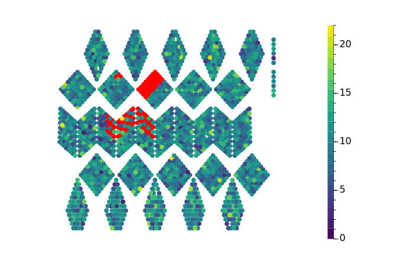
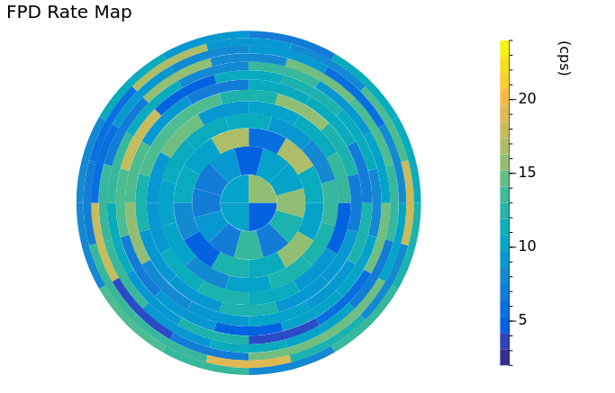
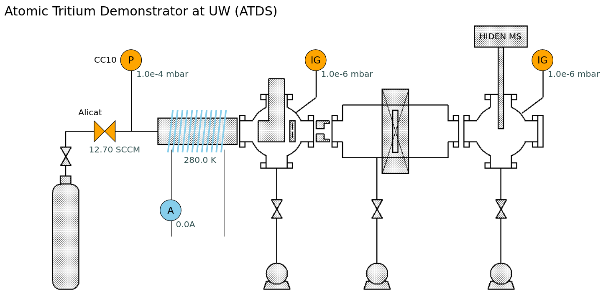
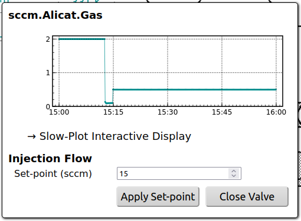
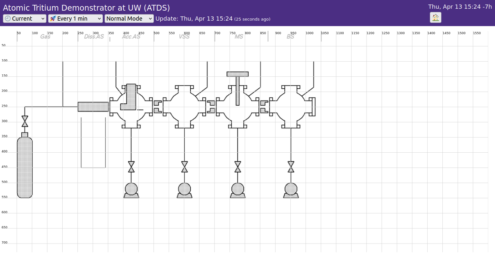

last line type, where each value is drawn as a horizontal
line until the next data point, so the line starts from the left edge of
the plot.connect (default): connects data points with straight
lineslast: holds each value horizontally until the next data
point (step plot)envelope (default): fills between the min and max
values (requires “min/max envelope” in Resampling)baseline: fills between the data line and the given
baseline valueopacity: fill opacity (default: 0.2; 0 to disable
fill)Resampling is controlled by the following parameters: -
threshold (seconds, default: 7200): resampling is
applied when the display time range exceeds this value - 0:
always resample - -1: never resample -
n-buckets (default: 600): number of buckets (i.e., data
points drawn) when resampling is applied. The bucket width is (display
time range) / (n-buckets). - reducer: how the value of
each bucket is calculated from the raw data points in the bucket: -
last (default): the last data point in each bucket. This
shows the latest value and preserves the data fluctuation. -
mean, median - sum,
count - stdev - min,
max - min/max envelope: in addition to the
reducer value, adds the minimum and maximum of the raw data values to
each bucket. Works best with a small n-buckets.
0 (always resample; this is the default for this plot type)
so that both series are resampled onto common time buckets.n-buckets.gt(0.5)->replace(true,'ON')->replace(false,'OFF')%.3f. If set, this takes precedence over Text
Transform.(x,y).x is used for the index of elements,
and y is used for color.

index fields define binding to the x
values of the data object (graph or histogram).Example 1:
{
"width": 1.0,
"height": 1.0,
"items": [
{"index":1200,"shape":"circle","attr":{"cx":0.370000,"cy":0.822000,"r":0.015}},
{"index":1201,"shape":"circle","attr":{"cx":0.403000,"cy":0.814000,"r":0.015}},
{"index":1202,"shape":"circle","attr":{"cx":0.367000,"cy":0.780000,"r":0.015}},
{"index":1203,"shape":"circle","attr":{"cx":0.400000,"cy":0.783000,"r":0.015}},
...
]
}Example 2:
{
"width": 1.000,
"height": 1.000,
"items": [
{
"index": 0,
"shape": "path",
"attr": {
"d": "M0.500,0.500 L0.580,0.500 A0.080,0.080 0 0,0 0.500,0.420 z"
}
},
{
"index": 1,
"shape": "path",
"attr": {
"d": "M0.500,0.500 L0.500,0.420 A0.080,0.080 0 0,0 0.420,0.500 z"
}
},
...
]
}utils/xy2map.py can be used to create a JSON map file from
a CSV of index, x, y.index,x,y
24,0.485,0.915
25,0.461,0.915
26,0.449,0.915
...$ PATH/TO/SLOWDASH/xy2map.py NAME.csv > map-NAME.jsonwidth and height are both 1.0.radius is 0.01.--svg option a SVG image file will be
also created, which is convenient to test the map file.
PROJECT/config, and the name
must be slowdash-NAME.json.Projects/ATDS/Config:{
"meta": {
"name": "ATDS",
"title": "",
"description": "Atomic Tritium Demonstrator at UW Top Level"
},
"view_box": "0 -10 1600 700",
"items": [
{
"type": "image",
"attr": { "x": 50, "y": -2, "height": 554, "width": 1003, "href": "ATDS.png" }
},
{"_type": "grid"},
{
"type": "valve",
"attr": {
"x": 135, "y": 235, "width": 30, "height": 30, "orientation": "horizontal",
"data-dx": -10, "data-dy": 50
},
"metric": { "channel": "sccm.Alicat.Gas", "active-above": 0.1, "format": "%.1f sccm" },
"action": { "form": "AlicatFlow" }
},
{
"type": "circle",
"attr": { "x": 185, "y": 85, "width": 30, "height": 30, "label": "P" },
"metric": { "channel": "mbar.CC10.Gas", "active-below": 1, "format": "%.1e mbar" }
},
...
],
"forms": {
"AlicatFlow": {
...
}
}meta for meta information of this configuration
file.view_box defines the coordinate for item
placement.items is a list of items.forms is for a mini control panel to send commands to
server-side scripts (typically to control the device).x, y, width,
height: position and size of the item on the canvasstroke, fill: line color and fill
colorlabel: text drawn in the shapelabel-dx, label-dy: offset position of the
label textlabel-font-family, label-font-size: label
fontdata-dx, data-dy: offset position of the
data value indicatordata-font-family, data-font-size: data
indicator fontdata-color: data indicator color{
"metric": { "channel": "mbar.CC10.Gas", "active-below": 1, "format": "%.1e mbar" },
...
}active-above and/or active-below defines
the active range. The color of the item changes accordingly.format is used for data indicator text.tolerable-gap can be specified for the gap in
time-series before the alarm icon is shown. The default is 60 sec.{
"action": { "open": "./slowplot.html?config=slowplot-ATDS.json" },
...
}{
"action": { "submit": { "action": "restart_IG" } },
...
}{
"action": { "form": "AlicatFlow" },
...
}Forms are defined separately in the same configuration file:
{
"forms": {
"AlicatFlow": {
"title": " Injection Flow",
"initial": {},
"inputs": [
{ "name": "flow", "label": "Set-point (sccm)", "type": "number", "step": 0.1 "initial": 15 }
],
"buttons": [
{ "name": "apply", "label": "Apply Set-point" },
{ "name": "close", "label": "Close Valve" }
]
},
...
},
...
}The configuration above creates a form like this (bottom part of the panel):

image{
"href": null,
"x": null, "y": null, "height": null, "width": null
}width and height, using the same
aspect ratio as the image file will prevent stretching.x and y (and possibly
width and height) to place the base image for
a convenient alignment.gridtype: grid to _type: grid to
disable the grid once item placement is completed.{
"view_box": "0 -10 1600 700",
"items": [
{
"type": "image",
"attr": { "x": 50, "y": -2, "width": 1003, "height": 553, "href": "ATDS.png" }
},
{"type": "grid"},
]
}
width and
height attributes are set to match the image dimensions.
Changing these values will scale the image.x and y attributes are adjusted to
align the image component nicely on the grid.view_box defines the overall coordinate, in
(xmin, ymin, xmax, ymax). Non-zero min values are often useful to adjust
the margin.metric binding create static
shapes.metric binding will have:
fill colors based on data values."metric": {"format": ...}Attributes common among Shape Items and the default values are:
{
"x": null, "y": null, "height": null, "width": null,
"label": null,
"stroke": this.style.strokeColor,
"fill": "none",
"data-dx": null, "data-dy": null,
"label-dx": null, "label-dy": null,
"data-color": this.style.dataColor,
"data-font-family": this.style.dataFontFamily,
"data-font-weight": this.style.dataFontWeight,
"data-font-size": this.style.dataFontSize,
"data-dominant-baseline": undefined,
"data-text-anchor": undefined,
"label-font-family": this.style.labelFontFamily,
"label-font-weight": this.style.labelFontWeight,
"label-font-size": this.style.labelFontSize,
"label-dominant-baseline": "central",
"label-text-anchor": "middle",
}boxmandatory attributes and default values are:
{ "x": null, "y": null, "width": 30, "height": 30 }circleMandatory attributes and default values are:
{ "x": null, "y": null, "width": 30, "height": 30 }valveMandatory attributes and default values are:
{ "x": null, "y": null, "width": 30, "height": 30, "orientation": "horizontal" }solenoidMandatory attributes and default values are:
{ "x": null, "y": null, "width": 50, "height": 30, "fill": "none", "stroke-width": 3, "turns": 12 }invisible
x and y attributes are still necessary
to draw the data labels.Mandatory attributes and default values are:
{ "x": null, "y": null }text
"action": {"open": URL} creates a
hyperlink.metric shows only the data values. (The
text attribute will have no effect.)Mandatory attributes and default values are:
{
"x": null, "y": null, "text": "",
"font-family": this.style.fontFamily,
"font-weight": this.style.fontWeight,
"font-size": this.style.fontSize,
"fill": this.style.strokeColor,
"data-color": this.style.dataColor
}plot
action.Mandatory attributes and default values are:
{
"x": null, "y": null, "width": 120, "height": 30,
"rx": 5, "ry": 5,
"label": "",
} plot / micro_plot
metric to assign a channel.Mandatory attributes and default values for a plot
are:
{
"x": 0, "y": 0, "width": 100, "height": 100, "zoom": 0.8,
"length": 3600, "dateFormat": null, "label": null,
"ticksX": 5, "ticksY": 2, "grid": true,
"min": null, "max": null, "logY": false,
"marginTop": 0,
"data-color": this.style.dataColor,
"fill-opacity": 0, "fill-baseline": 1e-100,
"timerange-margin-percent": 3,
}micro_plot is a small box showing a data history plot
without axis labels. This is basically the same as plot,
with some different default values:
{
"width": 50, "height": 30, "zoom": 0.2,
"marker-opacity": 0, "fill-opacity": 0.3,
"ticksX": 0, "ticksY": 0,
"marginTop": 0, "marginBotton": 0, "marginLeft": 0, "marginRight": 0,
"label": "",
"timerange-margin-percent": 0,
}<form>
to send commands to the server-side user script (SlowTask).<button> in the form is clicked, the
SlowTask function bound to the button is called with the form input
values as arguments (see “Action/Variable Binding” below).<button> with a name) are disabled.
This prevents users from making wrong operations based on past data
without noticing that it is not current.div.innerHTML = ... with parameter substitutions.<h3>Crate Power Control</h3>
Temperature: <span sd-value="ch1->last()->format('%.1f degC')">---</span>
<p>
<form name="power_control">
<div style="margin:10px;border:thin solid;padding:10px;width:30em">
<label><input type="checkbox" name="crate1">Crate 1</label><br>
<label><input type="checkbox" name="crate2">Crate 2</label><br>
<label><input type="checkbox" name="crate3">Crate 3</label><br>
</div>
<p>
<button name="power.turn_on()" style="font-size:x-large">Turn On</button>
<button name="power.turn_off()" style="font-size:x-large">Turn Off</button>
</form>The buttons call the functions in the SlowTask script
config/slowtask-power.py (task name power).
The checkbox values are passed as arguments, matched by name:
from slowpy.mesh import Tasklet
tasklet = Tasklet()
@tasklet.mesh.export()
async def turn_on(crate1:bool, crate2:bool, crate3:bool):
...
@tasklet.mesh.export()
async def turn_off(crate1:bool, crate2:bool, crate3:bool):
...<head> works.<form> to submit a command to the server-side
user code.<span> and <div> can have a
binding to data: use the sd-value=METRIC attribute.
<span sd-value="pressure->format('%.3e mbar')">--</span>
<input> elements usually have a name
and work as user controls, independent of data values.
sd-value can also be used for
<input>, but the input content is then overwritten at
every data update, which is annoying while the user is editing it.<form> has a name attribute,
the value of each named input element (<input>,
<select>, …) in it is sent to the server on every
change. The values are:
<form name="power_control">
<button> and <input> can be
enabled/disabled based on data values: use the
sd-enabled=METRIC attribute.
<button name="test.start()" sd-enabled="RunInfo['Status']->match('Idle')">Start</button>
sd-value and
sd-enabled, see the Data
Transform section.HTML forms are typically bound to a SlowTask script
(config/slowtask-NAME.py, task name NAME).
<button> named TASK.FUNCTION() calls a
function exported from the SlowTask.
<input> elements are passed as function
arguments, matched by name. Type annotations of the arguments are used
for conversion.test.set_V(ch=0).publish TOPIC(), the form values are
published to the SlowMesh topic instead of calling a function.ctrl.aio_stream()) or exposed (ctrl.expose())
from a SlowTask appear as data channels, and can be used in
sd-value and sd-enabled. Exposed variables are
named TASK.NAME.ctrl.form(FORM_NAME).@tasklet.content('html-NAME.html').config/slowtask-test.py)from dataclasses import dataclass
from slowpy.mesh import Tasklet
from slowpy.control import control_system as ctrl
tasklet = Tasklet()
@dataclass
class RunStatus:
running: bool = False
run_status = RunStatus()
@tasklet.initialize()
async def initialize():
ctrl.expose('status', run_status) # => data channel "test.status"
@tasklet.mesh.export()
async def set_V(ch:int, V0:float, ramping:float): # called by a button "test.set_V(...)"
...<form name="hv_control"> <!-- named form: values are synchronized and preserved -->
Ramping: <input type="number" name="ramping" value="1"> V/sec<br>
V0: <input type="number" name="V0" value="0">
<button name="test.set_V(ch=0)" sd-enabled="test.status['running']->invert()">Set</button><br>
Running: <span sd-value="test.status['running']">---</span>
</form>For details, see the SlowTask section of the Scripting chapter.
image/*,
<img src="..."><iframe src="..."><iframe src="...">userhtml directory are
served at /userhtml/FILENAME. To show one in this panel,
use the URL ./userhtml/FILENAME.html.
userhtml are also listed in
the SlowDash catalog./userhtml/):| URL | Handled as |
|---|---|
./FILENAME |
file in the userhtml directory |
./slowjs/SCRIPT |
SlowJS (the SlowDash JavaScript library) |
./api/ENDPOINT |
SlowDash Web API (redirected to /api/ENDPOINT; POST
works too) |
./event/ENDPOINT |
Server-Sent Events (proxied to /event/ENDPOINT) |
fetch('./api/data/ch0,ch1?length=60')../api/control, with the same content as an HTML form
button:
{"test.set_V()": true, "V0": 10, "ramping": 1}.<link rel="stylesheet" type="text/css" href="slowjs/slowdash.css">
<div id="layout" style="width:50vw;height:30vw"></div>
<script type="module">
import { SlowDash } from './slowjs/slowdash.mjs';
const slowdash = new SlowDash('#layout', 'my-layout.json'); // layout file in the project directory
slowdash.start(); // loads the layout and updates the data automatically
</script>Layout module
(./slowjs/layout.mjs) draws a layout from a configuration
object and data fetched by the user script.For details and more examples, see the User
HTML chapter and ExampleProjects/Advanced/UserHTML.